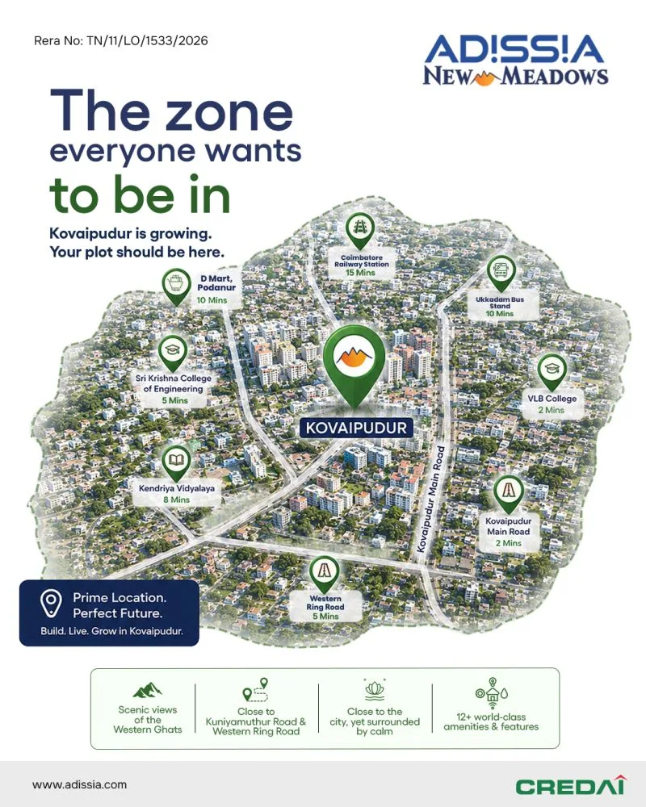

If you're researching plots in Kovaipudur, Coimbatore, you've likely already noticed it doesn't get the same coverage as bigger corridors like Saravanampatti or the areas around the Coimbatore Golf Club. That's partly the point: Kovaipudur is a smaller, quieter southern suburb, and the buyers drawn to it tend to want exactly that. This guide covers what's actually driving interest in the locality, its real connectivity (not marketing distances), and what a plotted-development buyer should check before committing here.
1. Where Is Kovaipudur?
Kovaipudur sits in southern Coimbatore, close to Kuniyamuthur Road and the Western Ring Road, which gives it a fairly direct connection into the rest of the city without sitting in the middle of Coimbatore's busier central corridors. Its defining physical characteristic is its position relative to the Western Ghats: several layouts in the area, including plotted developments, are marketed specifically around scenic hill views, and the locality's lower building density (compared to more built-up parts of the city) makes those views genuinely visible rather than a marketing photo taken from an unusual angle.
2. Real Connectivity: What's Actually Nearby
Rather than repeating generic "well-connected" marketing language, here's what's specifically close to Kovaipudur, based on project-level location data for the area:
| Landmark | Approx. Travel Time | Category |
|---|---|---|
| Kovaipudur Main Road | ~2 mins | Road Access |
| VLB College | ~2 mins | Education |
| Sri Krishna College of Engineering | ~5 mins | Education |
| Western Ring Road | ~5 mins | Road Access |
| Kendriya Vidyalaya | ~8 mins | Education (School) |
| D Mart, Podanur | ~10 mins | Retail |
| Ukkadam Bus Stand | ~10 mins | Transit |
| Coimbatore Railway Station | ~15 mins | Transit |
The pattern worth noting here is education density: Kovaipudur sits within a short drive of multiple colleges and a Kendriya Vidyalaya school, which is a meaningful factor for families evaluating the locality for a long-term home, not just an investment plot. Access to a large-format retail anchor (D Mart) within ~10 minutes also covers day-to-day essentials without needing to drive into central Coimbatore.
It's also worth being honest about what these figures don't tell you. "Minutes" figures from project marketing collateral are typically measured in light traffic and don't account for peak-hour congestion on the Western Ring Road itself, which can meaningfully lengthen a commute into central Coimbatore or toward Podanur during morning and evening rush periods. If your daily routine depends on a predictable commute time rather than an off-peak one, it's worth doing the drive yourself at the times you'd actually be travelling before finalising a plot here, rather than relying solely on marketing distances.
3. Who Is Actually Buying in Kovaipudur
Based on the layouts currently active in the locality, Kovaipudur draws two overlapping buyer profiles. The first is end-users who work in or near Coimbatore but want a self-build home outside the city's busiest, most built-up neighbourhoods, prioritising quiet and hill views over being in the geographic centre of things. The second is longer-horizon land investors who see the Western Ring Road corridor's improving connectivity as a reason to buy ahead of further densification, similar to how southern-suburb corridors in most mid-size Indian cities have historically appreciated as ring-road connectivity matures. Neither profile is chasing a fast flip; Kovaipudur is not currently positioned as a short-term speculative corridor the way a brand-new highway-adjacent layout sometimes is.
4. What's Currently Available: DTCP & RERA-Approved Layouts
One notable plotted development currently active in Kovaipudur is Adissia New Meadows, a DTCP & RERA-approved layout from Adissia Developers Pvt. Ltd. spanning 11.25 acres across two phases, with 225 freehold plots ranging from 734 to 1,275 sq ft. Unlike many plotted developments still working through pre-launch RERA registration, this layout already carries an active registration (TN/11/LO/1533/2026) and is at Ready to Construct status, meaning internal roads, drainage and rainwater harvesting infrastructure are already built rather than pending. For a full breakdown of pricing and what to verify before booking there specifically, see our review: Adissia New Meadows: Price, RERA & Plot Sizes Review.
5. Kovaipudur vs Other Coimbatore Plot Corridors
It's worth being specific about how Kovaipudur differs from Coimbatore's other active plotted-development corridors rather than treating "plots in Coimbatore" as one undifferentiated market. Chettipalayam, opposite the Coimbatore Golf Club in South Coimbatore, is a larger-scale corridor (44-acre, 700+ plot layouts are active there) positioned around an established golf-club micro-market and closer to industrial and logistics employment nodes like SIDCO and Singanallur. Kovaipudur, by contrast, is a smaller-scale, more residential-feeling suburb built around its Western Ghats views and its proximity to a cluster of colleges, with Ready-to-Construct inventory rather than pre-launch EOI-stage projects currently available. Neither is objectively "better"; they suit different priorities. A buyer chasing scale, a golf-club address and industrial-employment proximity should look at Chettipalayam. A buyer prioritising scenic views, a quieter setting, and being able to start construction immediately should look more closely at Kovaipudur.
6. What to Verify Before Buying Any Plot in Kovaipudur
Locality appeal doesn't substitute for legal verification on the specific layout you're buying into. Before booking any plot in Kovaipudur:
- RERA registration: confirm the layout's TNRERA registration number independently on rera.tn.gov.in, and that it matches the layout being marketed to you.
- DTCP layout approval: verify the sanctioned layout plan, including road widths and any OSR/park allocations, matches what's shown in marketing collateral.
- Construction status: distinguish clearly between a Ready-to-Construct layout (infrastructure already built) and a pre-launch layout (infrastructure and RERA registration still pending) — the two carry very different risk profiles despite sometimes similar marketing language.
- Title and encumbrance: request an encumbrance certificate for your specific plot, not just the layout as a whole, before registration.
- Access road status: confirm whether internal and approach roads are already built (as opposed to "planned"), since this directly affects how soon you can realistically begin construction.
7. The Practical Case for Kovaipudur
For a buyer who has already decided Coimbatore is the right city and is now narrowing down locality, Kovaipudur's case rests on three fairly concrete things: genuine proximity to the Western Ghats (not a stretch of marketing copy), a real cluster of colleges and a school within a short drive, and currently available Ready-to-Construct, RERA-registered inventory rather than a purely pre-launch pipeline. The trade-off is scale: this is a smaller, less-covered corridor than Chettipalayam or the city's more established northern and eastern suburbs, so the resale liquidity comparison point (how many other buyers are actively looking at Kovaipudur specifically, versus a larger, more established corridor) is one worth discussing directly with an advisor rather than assuming from general Coimbatore growth narratives alone.
8. Financing and Construction Timelines on a Kovaipudur Plot
One practical difference between buying a plot and buying a ready apartment is how financing typically works. Most banks and housing finance companies split the loan into a land component and a construction component, releasing the construction tranche only against verified progress once you've engaged an architect and contractor and applied for a building plan approval. Because Adissia New Meadows and similar Ready-to-Construct layouts in Kovaipudur already have roads and drainage in place, the gap between registering the plot and being able to start that construction-approval process is shorter than on a pre-launch layout still waiting on infrastructure. It's still worth budgeting for the building plan approval process itself, which in Coimbatore typically runs through the local planning authority and can take several weeks depending on plot size and the complexity of your building plan, before construction can formally begin.